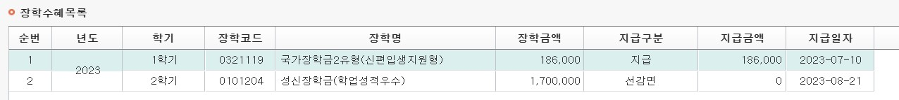

안녕하세요:) 프론트엔드 개발자를 꿈꾸는 서태영입니다. 저의 좌우명은 “작은일도 최선을 다하자!”입니다. ‘나혼자 산다’라는 프로그램에서 배우 김남희 님이 ‘도깨비’ 드라마에서 단 3분간 출연하는 단역배우로 등장했던 이야기를 들었습니다. 당시 김남희 배우님은 과로사한 의사 역할을 맡으며 “이 짧은 장면이 내 인생을 바꿀 수 있을까? 열심히 한다고 보일까? 역할이 좋아야 하지 않을까?”라는 의구심과 함께 부정적인 생각을 가지고 있었다고 합니다. 그러나 그 역할에 충실하기 위해 촬영 3일 전부터 씻지 않고, 분장도 하지 않으며 노력했습니다. 김남희 배우님의 작은 노력이 감독님의 눈에 들어와 ‘스위트 홈’, ‘미스터 선샤인’ 등 다수의 작품에서 중요한 역할을 맡게 되었고, 마침내 주연 배우로 성장할 수 있었다고 합니다. 이 이야기를 듣고 난 후, 저는 작은 일에도 최선을 다하는 것이 얼마나 중요한지 깨달았고, 저의 좌우명으로 삼게 되었습니다. 저 역시 김남희 배우님 처럼, 주어진 일에 항상 최선을 다해 프론트엔트 개발자로서 성장해 나가고자 합니다.
"비전공자를 위한 첫 코딩 챌린지" - 저자 임효성
진행도: 100%
"Do it! 자바스크립트 입문" - 저자 고경희
진행도: 70%
저는 수험생 시절 영어 모의고사에서 4등급을 받는 학생이었습니다. 저는 영어에 재능이 없다고 생각했습니다. 하지만 원하는 대학에 가기 위해서는 1등급이 간절했습니다. 성적이 낮은 이유를 분석한 결과 영문장 해석을 너무 꼼꼼히 해석하려는 문제가 있음을 깨닫고 문장 해석 인강을 듣기 시작했습니다. 하루 1시간이 넘는 강의를 듣고 복습을 하는데 많은 시간이 필요했습니다. 저는 아무리 바빠도 잠을 줄이면서라도 매일 한 강의씩 꼭 듣기로 약속했습니다. 또한 매일 버스를 타며 이동 시에도 모르는 단어를 정리해 놓은 메모장도 들고 다니며 틈틈히 암기했습니다. 처음에는 공부의 방향에 대한 걱정과 바로 오르지 않는 성적에 좌절도 했습니다. 하지만 "노력은 배신하지 않는다"라는 마음가짐과 함께 꾸준히 약속을 지켜나갔습니다. 점점 영어 성적이 오르기 시작했고, 결국 수능에서 1등급을 받게 되었습니다. 저는 이렇게 불가능을 가능케 했던 경험을 통해, 도전하는 것에 대한 두려움이 사라졌고, "이제 뭘 못하겠어?"라는 마인드를 가지고 살아가는 것 같습니다.
저는 대학생때 장학금을 받아보는 것이 제 버킷리스트 중 하나였습니다. 이를 위해서 토론 교양에서 자진해서 팀장을 맡기도 했습니다. 또한 녹화 강의는 밀리지 않게 노력했고, 배운 내용들은 복습을 하며 장학금을 위해 노력했습니다. 결국 성신장학금을 타게 되었고, 저는 저의 버킷리스트를 이뤘다는 점에 굉장히 뿌듯함을 느꼈습니다. 다음에는 과에서 6등 안에 들어 성적장학금을 받아보도록 하겠습니다:)
이메일: miseoseo1@naver.com
전화: 010-5206-3049